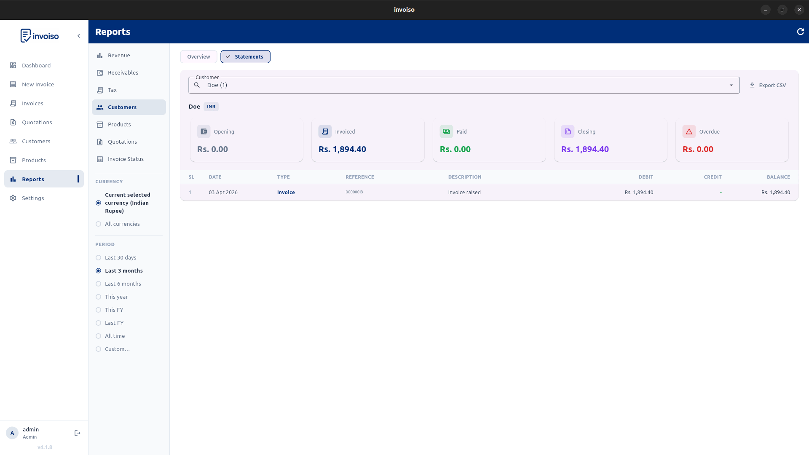

Most small businesses track sales informally until a tax deadline or a payment dispute forces a proper look at the numbers. The six reports below are what you actually need — not a full accounting suite, just clear answers to clear questions.
Revenue summary
Know your total billed, collected, and outstanding at a glance. A revenue summary answers the single most important question: how much money is actually coming in versus how much you've issued invoices for. Invoiso's revenue KPI card shows invoice count, average invoice value, and outstanding amount in one view — no spreadsheet required.
Monthly revenue trend
A single month's revenue number is almost meaningless without context. Track which months peak and which slow down. A billed-versus-collected chart reveals cash flow gaps early — if you billed heavily in March but collections lagged into May, that gap shows up clearly and you can act before it becomes a cash crunch.
Aged receivables
Who owes you money, and for how long? Invoices overdue 0–30 days, 30–60 days, and 60–90 days each need a different follow-up approach. A polite reminder works for 15 days overdue. A firm call is warranted at 45 days. At 75+ days, you need to decide whether to escalate. Invoiso lists every outstanding invoice with the number of days overdue so you always know where each receivable stands.
Tax report
At filing time, the question is simple: how much GST or VAT have you collected, and at which rate? You need that number broken down by rate — 5%, 12%, 18%, 28% — not lumped together. Invoiso groups tax collected by rate automatically so your return preparation is a lookup, not a calculation exercise.

Customer statement
A full history of invoices and payments for one customer is the fastest way to resolve a payment dispute. Instead of digging through email threads, you share a statement that shows every invoice raised, every payment received, and the running balance. Invoiso generates per-customer statements with opening balance, total invoiced, total paid, and closing balance — ready to share as a PDF.

Invoice status list
A flat list of every invoice with its current status — Paid, Partial, Unpaid, Overdue — is what you need for a weekly collections review. It tells you exactly which invoices to chase this week. Invoiso exports this list as CSV so you can pull it into a spreadsheet, sort by amount or age, and run your follow-up workflow however you prefer.
Invoiso includes all six reports built in. Download free for Linux or Windows — no subscription needed. See the reports overview or download Invoiso.